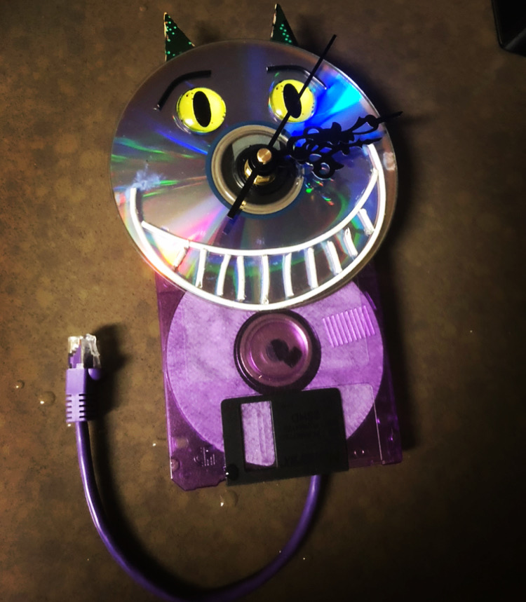
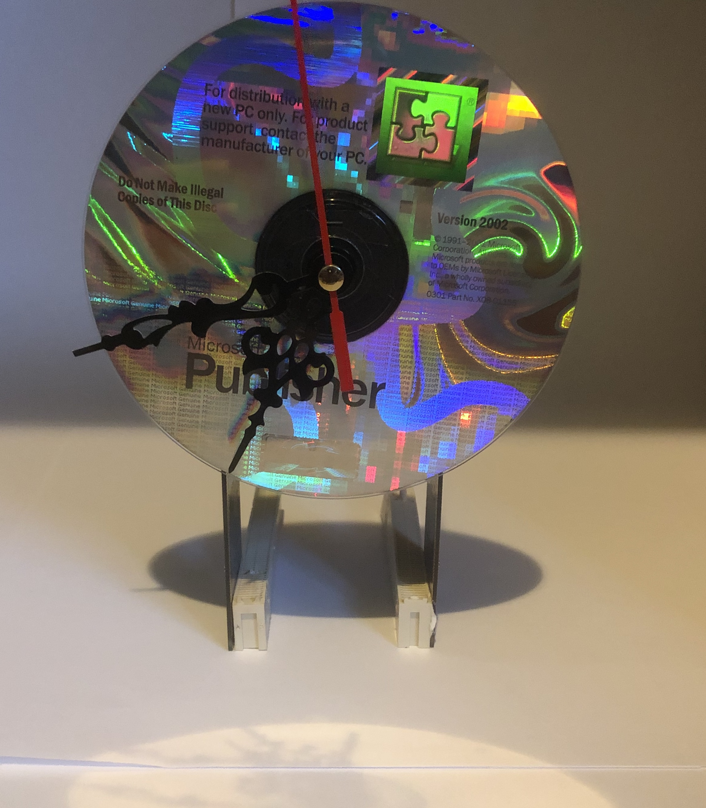
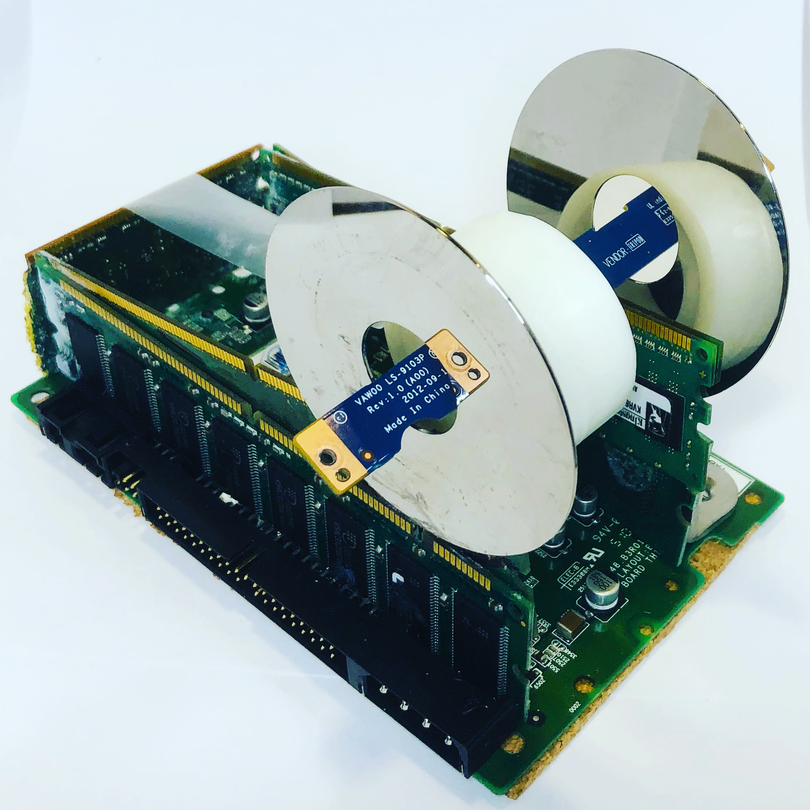

Sustainability
Reduce, reuse, recycle — in that order. Landfill is the last resort, not the default. Anything that still works gets rehomed; anything that doesn't gets harvested for parts or rebuilt into something else entirely.
About us
eWasteGang is the public face of Tech Literacy & The E-Waste Gang, a 501(c)(3) nonprofit in Norristown, Pennsylvania. We collect, repair, refurbish and reimagine electronic waste and we teach anyone who's curious how to do it themselves.

Our story
Most of the electronics people throw away aren't broken. They're slow, or out of fashion, or missing a $12 part. Meanwhile, plenty of people down the street can't afford a computer at all and plenty of kids grow up treating the machines around them as sealed magic boxes they're not allowed to open.
We think both of those problems are actually the same problem, and both come apart with a screwdriver.
So we made it our mission to spread tech literacy and find innovative ways to recycle e-waste. We believe technological literacy is as fundamental in the 21st century as reading, writing and arithmetic. Focusing mainly on personal computers, we teach people not just how to use them, but how to repair and refurbish them. We're out to bust the myth that tech is complicated and unreachable. If you can toast a slice of bread, you can replace a hard drive!
Our programs create jobs, encourage entrepreneurship, and promote ethical disposal practices. We also offer tech services at a fraction of what you'd expect, because your wallet shouldn't decide how much you're allowed to know.
Our vision
“A future where every person is empowered with technological knowledge, ethical e-waste disposal is the norm, and sustainable opportunity is abundant regardless of background or zip code.”
Tech Literacy & The E-Waste Gang
Core values
Reduce, reuse, recycle — in that order. Landfill is the last resort, not the default. Anything that still works gets rehomed; anything that doesn't gets harvested for parts or rebuilt into something else entirely.
"What's inside this?" is the most valuable question a kid can ask. We answer it by handing them the tools, not a diagram. Breaking something while trying to understand it is part of the curriculum.
Workshops are free. Explanations come without jargon. Services are priced so a neighbour can actually afford them. There's a place here whether you're an e-waste newbie or a tech wizard.
Every donated device is wiped to NSA/DoD-compliant standards before it goes anywhere. And we teach the same discipline to students: passwords, privacy, and how to erase a drive properly before you hand it over.
Reuse in practice
Not everything can be repaired. When a board is truly dead, it becomes material. Students design and build these in our upcycle studio, and some of them end up in our Etsy shop to fund the next round of workshops.



Who's behind it

Rashaad is the tech-whiz-heart-of-gold behind Tech Literacy & The E-Waste Gang. With over a decade in IT, he's worn a lot of hats: retail management, corporate roles and aerospace, where he wrote programs for unmanned aircraft and built Linux servers from scratch.
His friends joke that he's the IT guy for Norristown. But his talent isn't just getting things to work; it's making tech feel approachable, even friendly. He's the guy who can explain why your laptop won't start in words you'll actually understand. No jargon, promise.
Outside the workbench, Rashaad is deeply involved in the Norristown community. He has served on numerous local boards, tutored for the Norristown Library and the Literacy Council of Norristown, and currently represents the 1st District on Norristown Municipal Council.
In his free time he volunteers, plays Magic The Gathering (EDH) and tinkers with Raspberry Pi boards. So next time your PC starts acting up, you know who to call.